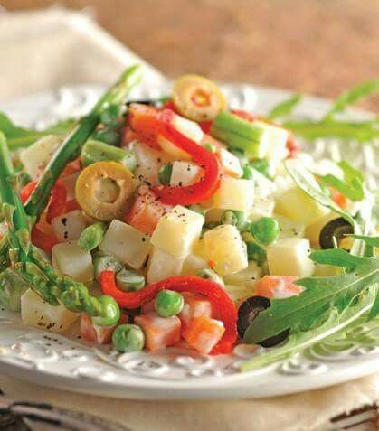

25 recetas reconfortantes y sanas para entrar en calor los días de nieve
 Webedia Trendencias Menú Nuevo Buscar Pinterest Facebook Flipboard Instagram Youtube MODA BELLEZA STREET STYLE ALFOMBRA ROJA TECNOLOGÍA SHOPPING
Partners
Belleza Avène25 recetas reconfortantes y sanas para entrar en calor los días de nieve
Sin comentarios HOY SE HABLA DE Zara Home Zara IKEA TikTok Isla de las tentaciones El Corte Inglés Asos Bikini Bañador Sfera Ofrecido por BiodermaProtege tu piel y cuida de los ecosistemas acuáticos con los protectores solares de Photoderm
Ofrecido por Cantabria LabsRutina facial para deportistas: 5 buenos hábitos y un producto esencial para que tu piel no sufra
Compartir 25 recetas reconfortantes y sanas para entrar en calor los días de nieve
Facebook Twitter Flipboard EmailSuscríbete a Trendencias
Síguenos Twitter Facebook Youtube Instagram RSS Flipboard 11 enero 2021, 18:01 Anabel Palomares @AnitajapiEn invierno somos muchos los que preferimos un buen plato de sopa caliente que nos reconforte del frío polar que hace fuera , pero no es la única opción sana y deliciosa que podemos hacer estos días en la cocina.
Los guisos de legumbres son un gran aliado en los días de más frío. También podemos optar por reconfortantes guisos o estofados (más sencillos de lo que pueda parecer) que podemos tener hechos de antemano y que, acompañados de una guarnición de verduras , son una opción muy saludable.
En Trendencias 23 recetas vegetarianas fáciles con las asegurarte de incluir más fruta y verdura en tu dietaCremas y sopas para entrar en calor los días de frío
Ingredientes
Para 4 personas Tomates 1 kg zanahoria 6 Mermelada de fresa (cucharadas) 4 Sal pimienta negra molida Jengibre molido Hierbabuena (varias hojitas)Cómo hacer Crema de tomate, zanahoria y jengibre
Dificultad: Fácil Tiempo total 45 m Cocción 45 mEs tremendamente sencilla y resulta, según los expertos en gastronomía de Directo al Paladar, un plato reconfortante ideal para una cena ligera . Si estamos intentando seguir una dieta de adelgazamiento, podemos cambiar la mermelada por una sin azúcar añadido que evite sumar calorías al plato.
En Trendencias 11 cremas con un toque moderno: deliciosas y fáciles (con los toppings más chulos) para disfrutar este inviernoSopa cremosa de alubias con verduras y parmesano
Esta receta, inspirada en la Toscana italiana , es una deliciosa opción para incluir las legumbres en nuestra dieta de una forma diferente y deliciosa . El parmesano le aporta un toque muy especial que le da mucho sabor al plato.
Sopa egipcia de lentejas rojas
La sopa de lentejas rojas es una receta, según nuestros experto de Directo al Paladar, de lo más tradicional en Egipto . Este plato caliente de cuchara, que puede transformarse en una crema, es una opción vegana y saludable para una cena , por ejemplo.
En Trendencias Nueve cosas que tener en cuenta antes de iniciarnos en una dieta veganaSopa picantita de tomate, jengibre y coco
El jengibre y el tomate son una combinación ganadora lo mires por donde lo mires. Además, esta sopa es muy digestiva, gracias al jengibre , y muy saludable y sabrosa ya que está compuesta en su mayoría por tomate.
Platos de legumbres sanos y reconfortantes
Alubias blancas con langostinos en 15 minutos
Pensar que las legumbres solo pueden acompañarse de chorizo y tocino es un error. Platos de legumbres con marisco o pescado , son una opción ideal para aligerar su contenido calórico sin perder sabor. En este caso usamos alubias previamente cocidas , por lo que este plato además de delicioso es rápido de preparar.
Garbanzos guisados con pulpo
Este plato es especialmente reconfortante y no resulta nada pesado . El pulpo le aporta no solo un sabor espectacular sino la posibilidad de reducir las calorías consumidas , al ser una proteína más ligera la que acompaña a los garbanzos.
En Trendencias Lentejas, cocido, judías blancas, carne guisada 21 platos de legumbres que se hacen solos y en versión súper healthyPotaje de garbanzos
Esta receta tradicional es la clásica que se hereda de generación en generación y a la que no hay que cambiar ni una coma para que resulte perfecta. Este potaje de garbanzos tradicional con patata y espinacas es un plato único delicioso y sano .
Lentejas super cremosas
Sin grasas, pero con mucho sabor y super cremosas, así son estas lentejas que podrás incluir en tu alimentación aunque estés siguiendo una dieta para adelgazar . Además son sencillas y estarán listas en apenas media hora .
En Trendencias Las dietas más populares: así son y esto es todo lo que necesitas saber de ellasAlubias carilla con pulpo picante
Un guiso repleto de sabor y ligeramente picante que está, según los expertos, más rico si lo tomamos de un día para otro porque el sabor se asienta. Estas alubias carilla con pulpo picante son un plato perfecto para una comida familiar de fin de semana .
Pochas con codornices a la riojana
Las codornices son un ave con mucha menos cantidad de grasa y que aportan un sabor muy especial a cualquier plato. Este tipo de legumbre necesita una cocción breve de entre 45 minutos y una hora para estar en su punto, lo que es sin duda una ventaja por que se reduce mucho el tiempo de cocinado.
En Directo al Paladar 11 recetas para cocinar caza en temporada y que te salgan perfectasVerdinas con bacalao y verduras
Este plato es sencillo hasta decir basta y lo único que tenemos que recordar es ponerlas a remojo el día anterior al hacer la receta. Un plato tan reconfortante como nutritivo y saludable .
Lentejas guisadas
Podemos hacer este guiso de legumbres con cualquier verdura de temporada , e incluso añadir más de las que ya salen en la receta, como coliflor, calabaza cortada en brunoise o nabo.
En Trendencias 23 deliciosas tartas de invierno con frutas de temporada para las tardes más frías del añoPochas frescas a la navarra
Acompañadas de una buena ensalada de la huerta, estas pochas frescas a la navarra son ideales como plato único de una comida de domingo. Llenas de sabor y sin grasa , son una opción más que saludable.
Garbanzos con calamares en 20 minutos
Si apenas tienes tiempo también puedes preparar una deliciosa receta de legumbres guisadas que esté llena de sabor y que resulte muy sana. Es el caso de este guisito para el que usaremos garbanzos en conserva y que nos solucionará cualquier comida de la semana.
En Trendencias 11 recetas deliciosas para que los niños comiencen a comer las verduras con gustoRecetas saludables con pollo para evitar el frío en invierno
Pollo al horno con verduras, manzana y salsa de mandarina
En esta ocasión, asamos el pollo dándole un sabor especial con verduras de temporada y frutas de invierno como la mandarina. Es importante en esta receta asar el pollo con la piel aunque luego no nos la comamos, para evitar que el pollo se quede demasiado seco y pierda sabor.
Contramuslos de pollo en salsa cremosa de calabaza
Para conseguir esta untuosa salsa no tendremos que recurrir a la nata para espesarla, sino a un delicioso y saludable puré de calabaza asada que podemos tener en el congelador en porciones ya preparadas para usar en cualquier receta dulce o salada.
En Trendencias De cremas a bizcochos: 27 recetas con calabaza (dulces y saladas) para aprovecharla al máximoPollo al horno con limón
Esta fácil receta de pollo asado es ideal si unas horas antes de encender el horno, dejamos marinar el pollo para que se impregne mejor de todos los aromas . Podemos acompañarlo de unas verduras que podemos asar a la vez que el pollo, para conseguir un plato completo y delicioso.
Pollo al estilo mediterráneo con aceitunas y alcaparras
Un guiso que no dejará indiferente a nadie porque está repleto de sabor . Los encurtidos le aportan un punto muy especial y diferente que se sale de los clásicos guisos tradicionales. Podemos acompañarlo de un poco de cuscús y tendremos un plato completo.
En Directo al Paladar Los siete tipos de guarniciones que convierten una comida aburrida en una deliciaGuisos reconfortantes y saludables para combatir el frío
Tofu con coliflor en salsa de curry
Además de ser una opción ideal para cuando volvamos a las oficinas, este guiso de tofu y coliflor es una opción vegana deliciosa y muy reconfortante que usa además una de las verduras de temporada del invierno.
Estofado de ternera
En solo media hora podemos tener esta receta de estofado que resultará muy sana si evitamos el pan y lo cambiamos por unas verduras como guarnición principal, o un arroz integral cocido que se integrará con la salsa estupendamente.
En Trendencias Las patatas también pueden formar parte de tu dieta: estas son las formas más saludables de cocinarlas como guarnición (y siete recetas para ponerlas en práctica)Papas con choco
Hay muchas recetas de guiso con patatas, como las patatas con costilla , las patatas a la riojana o las patatas con bacalao , pero esta es especialmente sabrosa. Es un guiso clásico andaluz que por lo saludable de su receta puede formar parte de una dieta equilibrada y saludable.
Curry japonés de ternera y calabaza con manzana
De nuevo tiramos de verduras y frutas de temporada para este delicioso plato que resulta junto con un bol de arroz cocido, una comida completa . Es sano y las especias le dan un toque asiático realmente interesante.
Estofado de conejo con zanahorias y habas
La carne de conejo es especialmente buena si buscamos una dieta baja en grasas ya que es muy magra y tiene un sabor estupendo. Además es una carne económica y muy fácil de preparar, como en este estofado con verduras que podemos acompañar de un poco de arroz integral .
En Trendencias Suma más grasas saludables a tu dieta para perder peso: 15 recetas fáciles y deliciosasEstofado de pavo con puré de patatas gratinado
Incorporar la guarnición al estofado es una maravillosa forma de conseguir un plato completo con el mínimo esfuerzo. En esta ocasión se trata de una guarnición de puré de patatas que gratinamos en el horno junto con el estofado .
Solomillo de cerdo especiado con hortalizas y quinoa
Si no quieres renunciar a comer carne de cerdo, lo mejor es escoger piezas magras como el solomillo . Es una carne muy tierna que queda ideal en un guiso como este, lleno de aromas , y que acompañamos de una guarnición saludable de quinoa.
Fotos | Directo al paladar
Trendencias en Instagram
Seguir
Compartir 25 recetas reconfortantes y sanas para entrar en calor los días de nieve
Facebook Twitter Flipboard E-mail Temas Gourmet cocina pollo frío RecetasCompartir
Facebook Twitter Flipboard E-mailLos mejores comentarios:
Ver 0 comentarios
Temas de interés vestidos de fiesta cortes de pelo Zara Primark Mango Rebajas Bershka libros recomendados 2019 keto juegos en pareja instagram orgasmo squirting InicioPartners
Belleza Avène Alfombra roja Libros y literatura Series de televisión Tecnología Viajes Dietas y Nutrición Rebajas deporte decoración Chiara Ferragni tarta Tendencias BellezaVer más temas
Síguenos Twitter Facebook Youtube Instagram RSS Flipboard E-mail Trendencias TV Lo mejor Equipo editorial Contacta con nosotrosMás sitios que te gustarán
Espinof DecoesferaExplora en nuestros medios
Tecnología Móviles, tablets, aplicaciones, videojuegos, fotografía, domótica Xataka Xataka Móvil Xataka Foto Xataka Android Xataka Smart Home Xataka Windows Xataka Ciencia Applesfera Genbeta Magnet Mundo Xiaomi Videojuegos Consolas, juegos, PC, PS4, Switch, Nintendo 3DS y Xbox 3DJuegos Vida Extra IGN Millenium Entretenimiento Series, cine, estrenos en cartelera, premios, rodajes, nuevas películas, televisión Sensacine Espinof Gastronomía Recetas, recetas de cocina fácil, pinchos, tapas, postres Directo al Paladar Estilo de vida Moda, belleza, estilo, salud, fitness, familia, gastronomía, decoración, famosos Vitónica Trendencias Trendencias Hombre Decoesfera Compradiccion Poprosa Latinoamérica Publicaciones de México Xataka México Directo al Paladar México Sensacine México 3DJuegos México Aviso legal Condiciones de uso Condiciones de uso de cookies Publicidad InicioReciente
Las sandalias de dedo son las más vendidas de Asos Hablamos de manicura con la gurú de las uñas Rita Remark: todo lo necesario para iniciarse en el nail art Prepara tu cesta de la compra de Bershka: estas son las piezas de rebajas que podrían agotarse en minutos Este bikini de María Pedraza demuestra que domina el arte de la versatilidad Consejos de peluqueros para mantener intactas tus mechas durante verano y siempre 21 compras que fichamos en las rebajas de Springfield y que preparan nuestro armario para las vacaciones de verano La rutina de 13 ejercicios en 11 minutos con la que Kendall Jenner entrena todos los días y que cualquiera puede hacer en casa Por si te lo perdiste Paula Echevarría demuestra cómo un vestido blanco es siempre una buena idea para lucir en verano: cinco looks que lo prueban Las zapatillas con el estampado más trendy son de Vans y tienen descuento extra en Asos Siete novedades en perfumes de hombre para disfrutar este verano y el resto del año Este bañador es perfecto para chicas con mucho pecho (y además está rebajado en El Corte Inglés) Mascarillas de pelo reparadoras para el verano: ¿cuál es mejor comprar? Consejos y recomendaciones Las rebajas de Sfera han empezado: 11 vestidos perfectos para nuestras vacaciones de verano 2021 Las mejores ofertas en zapatillas que encontramos en Amazon tras la locura del Prime Day HIFT, la modalidad de entrenamiento que planta cara al HIIT para poner nuestro cuerpo a punto 11 novedades de Ikea con las que decorar nuestras terrazas y hacerlas más acogedoras este verano NYX Cosmetics lanza “Pride Collection”, una edición limitada de maquillaje cargada de color y buen rollo Así funciona Spotify Greenroom, la nueva red social de audio que quiere desbancar a Clubhouse Doña Letizia apuesta por un favorecedor look working girl en la entrega de las Medallas de las Bellas Artes 'Fuimos canciones', la nueva comedia romántica de Netflix que adapta el best seller de Elísabet Benavent, tiene ya fecha de estreno y teaserVer más artículos
Trendencias TV
¿QUÉ ME PONGO?: Guía de básicos o fondos de armario que todos deberíamos tener | TE SIENTA BIEN Los MEJORES Y LOS PEORES ESTILISMOS de los Oscar 2018 | Front Row TRES PEINADOS QUE SON TENDENCIA PARA PELO CORTO | TrendenciasVer más vídeos
Síguenos Twitter Facebook Youtube Instagram RSS FlipboardEn Trendencias hablamos de
Alfombra roja Libros y literatura Series de televisión Tecnología Viajes Dietas y Nutrición Rebajas deporte decoración Chiara Ferragni tarta Tendencias BellezaVer más temas
SubirWebedia
Tecnología
Xataka Xataka Móvil Xataka Foto Xataka Android Xataka Smart Home Xataka Windows Xataka Ciencia Applesfera Genbeta Magnet Mundo XiaomiVideojuegos
3DJuegos Vida Extra IGN MilleniumEntretenimiento
Sensacine EspinofGastronomía
Directo al PaladarEstilo de vida
Vitónica Trendencias Trendencias Hombre Decoesfera Compradiccion PoprosaLatinoamérica
Xataka México 3DJuegos México Sensacine México Directo al Paladar México Webedia Xataka Vida Extra Espinof Genbeta Directo al Paladar Xataka Ciencia Trendencias Applesfera Xataka Móvil Decoesfera Vitónica Xataka Foto Trendencias Hombre Xataka Android Xataka Smart Home Xataka Windows Magnet Compradiccion 3DJuegos Sensacine IGN Millenium Poprosa Mundo Xiaomi